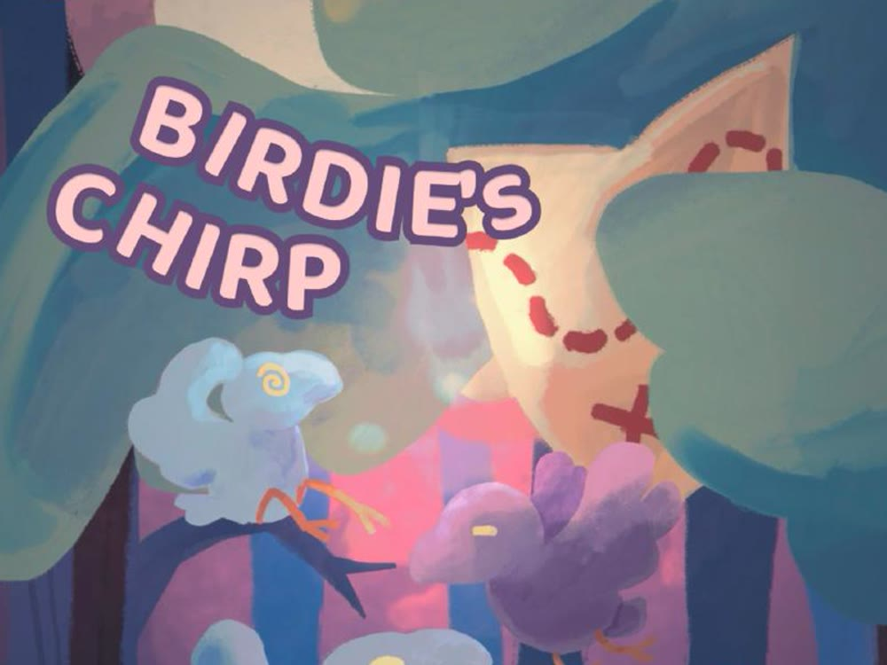
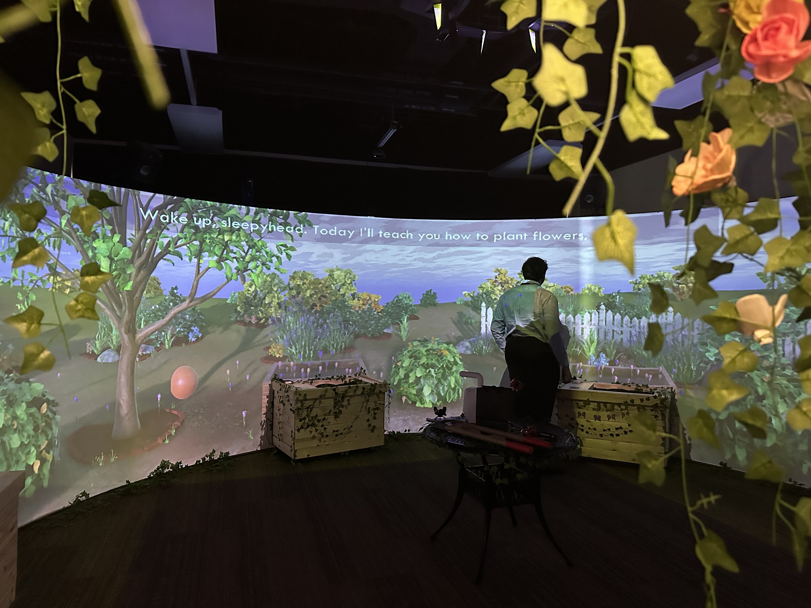

Interactive Experiences

In progressAn asymmetrical party game: one player on a Tilt Five guides people in the physical room through challenges.
Birdie's Chirp

A 270° curved-screen gardening experience exploring the emotional toll of caring for someone with dementia.
Remnants

A gesture-tracked dance game where visitors recreate dance moves from the National Archives’ historical films.
Democracy Disco

A capstone platformer about overconsumption, where shops transform into levels as a looming shadow pushes you to buy more.
Shadowed Consumption

A game that uses MediaPipe hand tracking to let players interact with a particle system through gestures.
Gesterial Control

A phone-booth installation where visitors help a lost AI “bot” through speech recognition, translation, and distorted audio.
Lost In Translation

A two-player mystery escape-room game: solve gesture-triggered puzzles to uncover a cult’s code word before you’re sacrificed.
Crimson Premonition

A collaborative VR installation exploring storytelling and human emotion, built in Unity with Maya and Cinema4D.
Anodyne

A 360° VR city inspired by Calvino’s Invisible Cities, where streets follow planetary orbits and buildings reflect the stars.
Cities and Stars

An AR piece that immerses viewers in the realities polar bears face as climate change melts the Arctic ice.